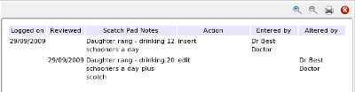
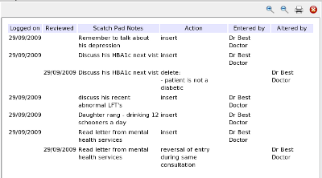

ScratchPad Audit
All actions are logged as decribed in
Modifying the Scratchpad
The audit trail will include
- The date logged and by whom
- The scratchpad note
- The date(s) changed and by whom
- The changes to the scratchpad item.
Remember these form a medico-legal audit trail.
You may view these at any time from the popup menu over the scratchpad list. For example for a single item:

or the entire scratchpad history can be viewed.

See also the general concepts of audition under the basic concepts section
Auditing